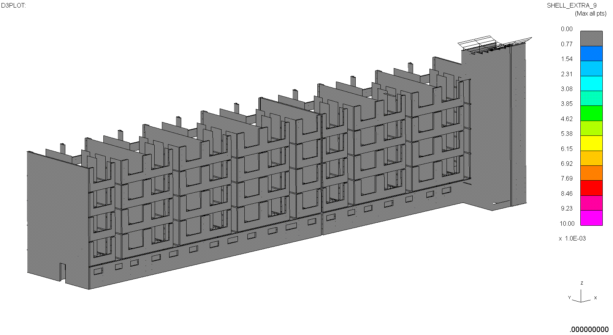
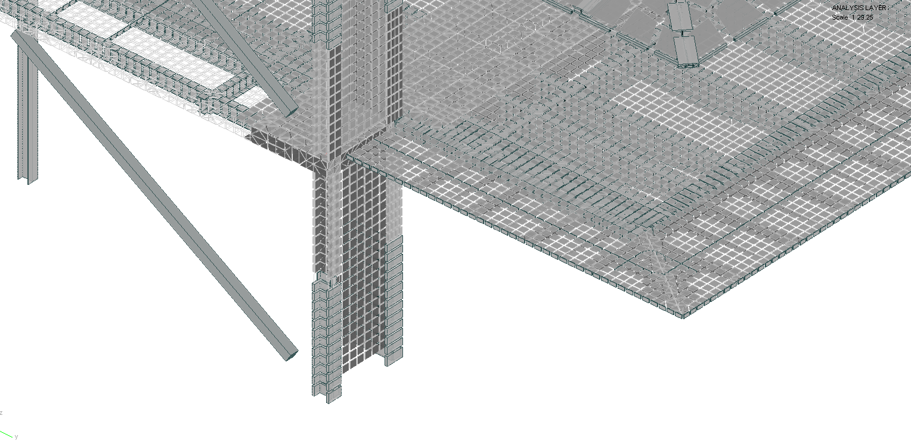
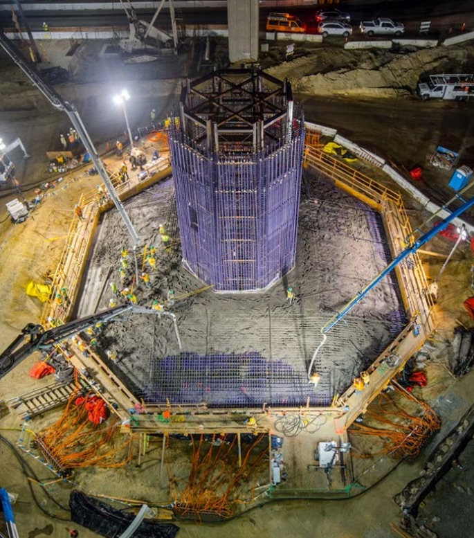

Groningen Earthquakes
2015 - Present
Undertook analysis of unreinforced masonry structures subject to induced
seismicity in the Groningen region of the Netherlands. These figures show an
in-house material model, a smeared crack formulation that captures discontinuity
behaviour in masonry. This project involves tens of thousands of structures
across the region, and remains ongoing.

Monocoque Floor
2017 - Present
Monocoque plate floor, designed to meet aggressive deflection requirements for an 8m (26ft) long cantilever of a thin floor. This is very slender for a floor cantilever, especially one that happens to be in a seismic zone. Currently under development, client confidential.

Gerald Desmond Bridge
2015
Analysis of thin-walled concrete structures subject to local-buckling effects, undertaken for the new Gerald Desmond Bridge in Long Beach, CA. Finite element analysis in LS-DYNA.
